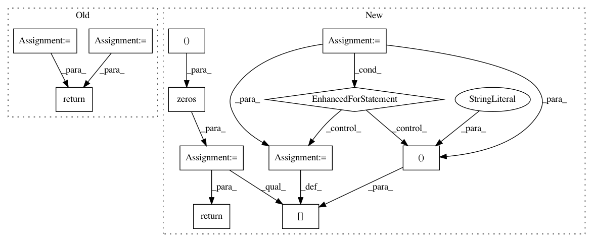

c96af58e6ab2f85626e51a331e8479da49329f0e,deepchem/models/tensorflow_models/__init__.py,TensorflowClassifier,predict_proba_on_batch,#TensorflowClassifier#Any#Any#,654
Before Change
batch_outputs = np.asarray(data[:n_tasks], dtype=float)
// reshape to batch_size x n_tasks x ...
if batch_outputs.ndim == 3:
batch_outputs = batch_outputs.transpose((1, 0, 2))
elif batch_outputs.ndim == 2:
batch_outputs = batch_outputs.transpose((1, 0))
else:
raise ValueError(
"Unrecognized rank combination for output: %s " %
(batch_outputs.shape,))
// Note that softmax is already applied in construct_grpah
outputs = batch_outputs
return np.copy(outputs)
class TensorflowRegressor(TensorflowGraphModel):
Regression model.
After Change
// weight decay
if self.penalty != 0.0:
penalty = model_ops.weight_decay(self.penalty_type, self.penalty)
loss += penalty
return loss
def fit(self, dataset, nb_epoch=10, max_checkpoints_to_keep=5,
log_every_N_batches=50, **kwargs):
Fit the model.
Parameters
----------
dataset: dc.data.Dataset
Dataset object holding training data
nb_epoch: 10
Number of training epochs.
max_checkpoints_to_keep: int
In pattern: SUPERPATTERN
Frequency: 3
Non-data size: 12
Instances
Project Name: deepchem/deepchem
Commit Name: c96af58e6ab2f85626e51a331e8479da49329f0e
Time: 2017-01-18
Author: joegomes@stanford.edu
File Name: deepchem/models/tensorflow_models/__init__.py
Class Name: TensorflowClassifier
Method Name: predict_proba_on_batch
Project Name: JasonKessler/scattertext
Commit Name: 4d6e349e05de71d7473ad2ed853b4f9b40746409
Time: 2020-02-22
Author: JasonKessler@users.noreply.github.com
File Name: scattertext/TermDocMatrix.py
Class Name: TermDocMatrix
Method Name: get_metadata_freq_df
Project Name: NifTK/NiftyNet
Commit Name: ae9cf55f6a5775a0d39a869166e8b33d4f39c273
Time: 2017-04-12
Author: wenqi.li@ucl.ac.uk
File Name: region_properties.py
Class Name: RegionProperties
Method Name: __compute_mask